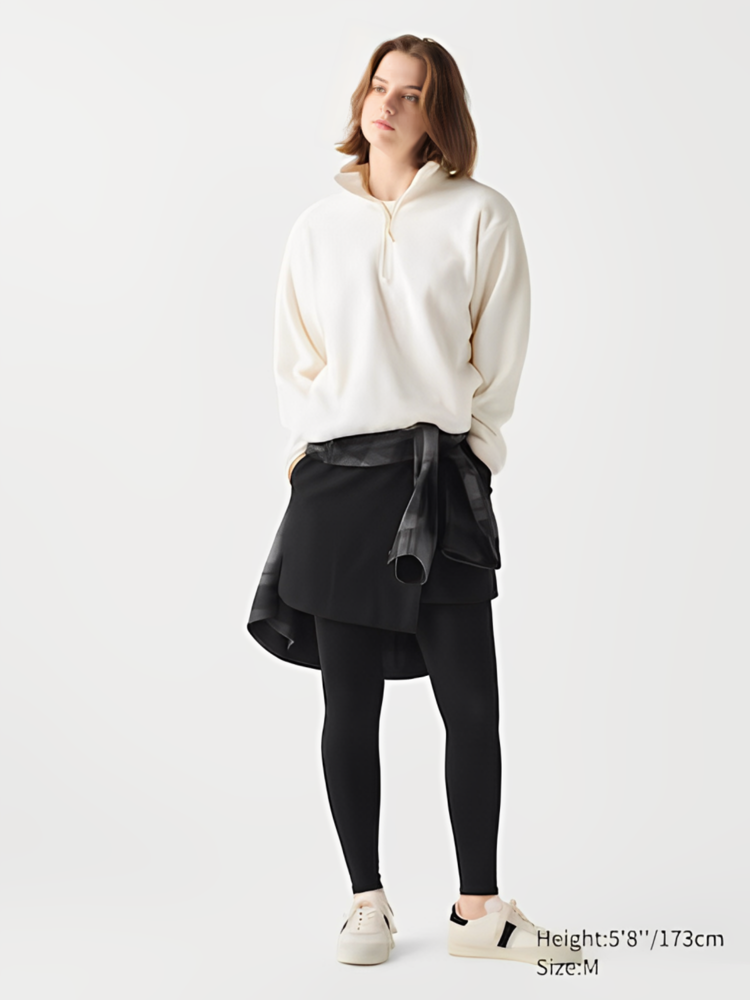

Mùa đông đến mang theo hơi lạnh se sắt, nhưng cũng là cơ hội để các nàng thể hiện gu thời trang tinh tế và sành điệu. Với những cách phối đồ mùa đông ấm áp, đẹp và sang chảnh, bạn sẽ không chỉ giữ ấm cơ thể mà còn trở nên nổi bật và thu hút mọi ánh nhìn. Cùng UNIQLO khám phá ngay 17 gợi ý phối đồ cực chất cho mùa đông năm nay nhé!
Chọn trang phục giữ ấm khi du lịch mùa đông
Quần giữ nhiệt
Quần giữ nhiệt là lựa chọn lý tưởng giúp giữ ấm cơ thể trong những ngày thời tiết lạnh giá. Những chiếc quần giữ nhiệt tốt thường được làm từ chất liệu cách nhiệt và chống thấm nước, đảm bảo giữ ấm hiệu quả mà vẫn thoáng khí, mang lại cảm giác thoải mái cho người mặc. Sản phẩm thường được sử dụng như một lớp lót bên trong, phù hợp để phối cùng nhiều trang phục khác mà không làm mất đi tính thẩm mỹ.
Khi chọn quần giữ nhiệt, bạn nên cân nhắc giữa các kiểu dáng như quần legging hoặc quần dài, tùy thuộc vào nhu cầu sử dụng và sở thích cá nhân. Đặc biệt, dòng quần giữ nhiệt HEATTECH của UNIQLO là sự lựa chọn đáng cân nhắc. Sản phẩm không chỉ nổi bật với khả năng giữ nhiệt vượt trội mà còn có thiết kế hiện đại, ôm sát cơ thể, tạo sự linh hoạt khi vận động.

'Chọn quần giữ nhiệt cho trang phục giữ ấm khi du lịch mùa đông (Nguồn: UNIQLO)
>> Xem thêm
+ Phối đồ áo sơ mi nam vải dạ đơn giản, đẹp, đậm chất thời trang
+ Màu nude là màu gì? Ứng dụng và gợi ý phối đồ thời trang, tinh tế
+ Gợi ý 10 kiểu phối đồ công sở nam lịch sự, đơn giản mà đẹp
Áo giữ nhiệt
Áo giữ nhiệt là trang phục không thể thiếu trong mùa đông, giúp cơ thể bạn duy trì nhiệt độ ổn định và chống lại cái lạnh khắc nghiệt. Với thiết kế ôm sát, áo lót giữ nhiệt hỗ trợ giữ ấm hiệu quả cho các vùng quan trọng như ngực, bụng và lưng. Đặc biệt, các dòng áo giữ nhiệt HEATTECH của UNIQLO không chỉ nổi bật với công nghệ cách nhiệt tiên tiến mà còn có khả năng hút ẩm, giữ nhiệt và tạo cảm giác thoáng khí.

Áo giữ nhiệt là trang phục không thể thiếu vào mùa đông (Nguồn: UNIQLO)
Áo khoác
Một chiếc áo khoác nữ với khả năng chống nước và giữ nhiệt là item không thể thiếu trong tủ đồ mùa đông, đặc biệt khi bạn du lịch đến những vùng có khí hậu lạnh giá. Lớp lót bên trong và khả năng cách nhiệt tốt sẽ giúp cơ thể bạn luôn ấm áp, ngay cả khi nhiệt độ xuống thấp.
Đối với những vùng lạnh ẩm, bạn nên chọn loại áo khoác có khả năng chống gió và nước cao. Trong đó, áo phao nữ từ UNIQLO là một lựa chọn phổ biến, vừa thời trang lại vừa đảm bảo giữ ấm hiệu quả.

Áo khoác là item không thể thiếu, giúp giữ ấm tốt khi đi du lịch mùa đông (Nguồn: UNIQLO)
>> >> Ý nghĩa của màu hồng là gì? Cách phối màu thời trang với màu hồng
>> >> 20/10 là ngày gì? Ý nghĩa, lịch sử ra đời ngày phụ nữ Việt Nam
>> >> Các phong cách thời trang cơ bản, sành điệu, phổ biến hiện nay
Phối đồ mùa đông cho nữ thời trang, sang chảnh
Phối đồ mùa đông với áo khoác phao và quần dài
Áo khoác phao là lựa chọn hàng đầu trong mùa đông nhờ khả năng giữ ấm vượt trội và phong cách thời trang. Khi kết hợp áo khoác phao với quần dài nữ, bạn có thể tạo nên một bộ trang phục vừa ấm áp vừa thanh lịch. Hãy chọn quần jeans nữ tối màu hoặc quần kaki dáng ôm để cân bằng sự cồng kềnh của áo khoác phao, tạo nên vẻ ngoài gọn gàng hơn. Đừng quên kết hợp thêm phụ kiện như khăn choàng hoặc mũ len để tăng thêm điểm nhấn cho trang phục và bảo vệ cơ thể trong những ngày giá rét.

Phối đồ mùa đông với áo khoác phao và quần dài ấm áp, thanh lịch (Nguồn: UNIQLO)
>> Tham khảo thêm các cách phối đồ khác:
+ 12 Cách phối đồ với quần ống rộng đẹp, thanh lịch, thời thượng
+ Cách phối đồ với quần ống rộng nam thời trang, đa dạng phong cách
+ Casual là gì? Giải đáp tất cả thông tin về casual
Phối đồ mùa đông với áo len và chân váy dài
Áo len kết hợp với chân váy dài mang đến vẻ ngoài dịu dàng và nữ tính, rất phù hợp cho những ngày đông lạnh. Bạn có thể chọn áo len dáng ôm để tôn dáng hoặc áo len oversized để tạo cảm giác thoải mái và trẻ trung. Khi phối với chân váy dài, hãy ưu tiên chất liệu dày dặn để giữ ấm hiệu quả. Để hoàn thiện trang phục, một đôi boots cổ cao hoặc giày thể thao sẽ là sự lựa chọn lý tưởng, vừa giữ ấm vừa tạo điểm nhấn thời trang vintage. Cách phối đồ với chân váy dài qua gối này đang được nhiều bạn nữ ưa chuộng nhờ sự tiện lợi và tính thời trang.

Phối đồ mùa đông với áo len và chân váy dài mang đến vẻ ngoài dịu dàng và nữ tính (Nguồn: UNIQLO)
Phối đồ mùa đông với áo hoodie năng động
Áo hoodie nữ luôn là biểu tượng của phong cách trẻ trung và năng động, đặc biệt được ưa chuộng trong mùa đông. Bạn có thể phối áo hoodie với quần jogger để tạo nên bộ trang phục thoải mái, phù hợp cho các hoạt động ngoài trời. Nếu muốn một phong cách thanh lịch hơn, hãy thử kết hợp hoodie với quần jeans hoặc quần tây nữ hoặc quần ống rộng. Đừng quên phối thêm một chiếc áo khoác dài bên ngoài để giữ ấm mà vẫn giữ được vẻ ngoài hiện đại và cá tính.

Phối đồ mùa đông với áo hoodie năng động, hiện đại và cá tính (Nguồn: UNIQLO)
>>> 20 Kiểu phối đồ Tết 2026 đi chơi đẹp, sành điệu, thời trang
>>> Mẹo phối đồ đi chơi Tết cho nam đẹp, ấn tượng, thu hút 2026
>>> 100+ Lời chúc 20/10 ngày phụ nữ Việt Nam ý nghĩa, ngắn gọn
Phối đồ mùa đông với áo dài tay, quần jean và mũ len
Áo dài tay kết hợp với quần jeans nữ là sự lựa chọn lý tưởng, vừa tạo cảm giác thoải mái lại dễ dàng phối hợp. Để thêm phần phong cách và giữ ấm cho phần đầu, bạn có thể kết hợp với một chiếc mũ len. Mũ len không chỉ giúp bảo vệ bạn khỏi lạnh mà còn tạo điểm nhấn cho tổng thể trang phục, khiến bạn trông thật năng động và trẻ trung.

Phối đồ mùa đông với áo dài tay, quần jean và mũ len năng động và trẻ trung (Nguồn: UNIQLO)
>> >> 17+ Cách phối đồ với quần jeans ống rộng đẹp, hack dáng cực đỉnh
>> >> Black Friday là gì? Vào ngày nào trong năm? Cách săn sale chuẩn bài
>> >> Tổng hợp 25+ món quà Noel, quà Giáng sinh ý nghĩa, độc đáo 2025
Phối đồ mùa đông với áo khoác và váy dài
Nếu bạn muốn giữ ấm mà vẫn giữ được vẻ nữ tính, phối áo khoác với váy đầm dài là lựa chọn hoàn hảo. Áo khoác không chỉ giúp giữ nhiệt mà còn dễ dàng kết hợp với các kiểu váy dài thanh lịch, tạo nên phong cách sang trọng nhưng không kém phần thoải mái. Chọn một chiếc váy đầm dài chất liệu dày dặn và áo khoác len sẽ giúp bạn vừa kín đáo lại giữ ấm hiệu quả trong những ngày lạnh giá.

Phối đồ mùa đông với áo khoác và váy dài đẹp, thời trang (Nguồn: UNIQLO)
>> >> Cách phối đồ nữ đẹp, đơn giản, trẻ trung, sang trọng
>> >> 20+ Cách phối đồ nam đẹp, đơn giản, trẻ trung, thời trang 2025
>> >> Noel 2025 là ngày mấy? Nguồn gốc, ý nghĩa về ngày Giáng Sinh
Phối đồ mùa đông với áo blazer và quần jean
Áo blazer là item không thể thiếu trong khi phối đồ mùa đông, giúp bạn tạo nên vẻ ngoài vừa thanh lịch vừa ấm áp. Khi kết hợp với quần jean, bạn có thể tạo ra một set đồ đơn giản nhưng đầy phong cách, phù hợp với nhiều hoàn cảnh từ đi làm đến dạo phố. Chọn một chiếc blazer dáng dài và quần jean ống đứng để tăng thêm sự sang trọng và thoải mái cho bộ trang phục mùa đông của bạn.

Phối đồ mùa đông sang chảnh, thanh lịch với áo blazer và quần jean (Nguồn: UNIQLO)
Phối đồ mùa đông với áo khoác giả lông cừu ấm áp
Áo khoác giả lông cừu không chỉ giúp bạn giữ ấm trong những ngày đông giá rét mà còn mang đến phong cách thời trang hiện đại và tinh tế. Để tạo nên một bộ trang phục hài hòa, bạn có thể kết hợp áo khoác giả lông cừu với áo len cổ lọ và quần jeans dáng slim, tạo nên vẻ ngoài gọn gàng và năng động. Nếu yêu thích phong cách sang trọng, bạn có thể phối áo khoác này với váy len dáng dài cùng đôi boots cao cổ, vừa thanh lịch vừa quyến rũ. Ngoài ra, phụ kiện như khăn quàng cổ hoặc túi xách nhỏ cũng là điểm nhấn tuyệt vời giúp tổng thể trở nên hoàn hảo.

Phối đồ mùa đông với áo khoác giả lông cừu ấm áp, hiện đại và tinh tế (Nguồn: UNIQLO)
Phối đồ mùa đông với các phụ kiện
Phụ kiện là điểm nhấn hoàn hảo để nâng tầm phong cách mùa đông của bạn. Một chiếc khăn len mềm mại không chỉ giữ ấm mà còn tạo điểm nhấn cho trang phục, đặc biệt khi kết hợp với áo khoác dáng dài hoặc áo len cổ lọ. Mũ len cũng là lựa chọn phổ biến, vừa bảo vệ bạn khỏi gió lạnh, vừa mang đến vẻ ngoài trẻ trung, năng động. Đừng quên đôi găng tay da hoặc len để giữ ấm đôi tay mà vẫn toát lên vẻ sang trọng. Bên cạnh đó, một chiếc túi xách phù hợp sẽ giúp tổng thể trang phục trở nên tinh tế và thời thượng hơn. Việc phối hợp khéo léo các phụ kiện không chỉ giữ ấm cơ thể mà còn thể hiện gu thẩm mỹ tinh tế của bạn trong những ngày đông lạnh giá.

Phối đồ mùa đông thời trang, ấm áp với các phụ kiện (Nguồn: UNIQLO)
Phối đồ mùa đông đẹp cho nữ dáng người thấp
Để tạo nên phong cách mùa đông vừa đẹp vừa tôn dáng cho những cô nàng có chiều cao khiêm tốn, việc lựa chọn trang phục cần được chú trọng đến sự gọn gàng và cân đối. Áo khoác dáng ngắn hoặc áo thun dáng lửng là lựa chọn lý tưởng, giúp phần thân trên trông gọn hơn và tôn lên đôi chân. Kết hợp cùng quần jeans cạp cao hoặc chân váy ngắn sẽ tạo hiệu ứng kéo dài đôi chân một cách hiệu quả.
Các gam màu trung tính như be, nâu, hoặc pastel không chỉ giữ vẻ thời thượng mà còn dễ dàng phối hợp, tạo nên tổng thể hài hòa. Những phụ kiện như khăn len dáng dài hoặc túi xách nhỏ gọn sẽ là điểm nhấn hoàn hảo, giúp set đồ trở nên nổi bật và cuốn hút hơn.

Phối đồ mùa đông đẹp cho nữ dáng người thấp 1m50 (Nguồn: UNIQLO)
Phối đồ mùa đông đẹp cho nữ dáng người cao
Với chiều cao nổi bật, các nàng có rất nhiều lựa chọn để tạo nên phong cách thời trang mùa đông ấn tượng. Hãy thử kết hợp áo khoác dáng dài với quần jeans ống rộng hoặc quần legging để tôn lên đôi chân thon dài và tạo sự cân đối cho cơ thể. Những chiếc áo len oversize hoặc áo cổ lọ phối cùng váy midi cũng là lựa chọn tuyệt vời, vừa giữ ấm vừa mang lại vẻ ngoài thanh lịch. Đừng quên chọn thêm một đôi boots cao cổ để tăng phần cá tính. Các phụ kiện như khăn choàng cổ, túi xách nhỏ nhắn sẽ giúp tổng thể trang phục trở nên tinh tế hơn, phù hợp với phong cách hiện đại mà không làm mất đi sự thoải mái trong mùa đông lạnh giá.

Phối đồ mùa đông đẹp cho nữ cao với áo khoác dáng dài và quần legging (Nguồn: Internet)
>> >> Đọc thêm:
+ Minimalism style là gì? Phong cách thời trang nam nữ tối giản
+ Basic là gì? Vì sao phong cách basic được ưa chuộng hiện nay?
Phối đồ mùa đông cho nam ấm áp, lịch lãm
Phối đồ mùa đông với áo khoác phao, áo hoodie và quần thể thao
Khi mùa đông đến, áo khoác phao, áo hoodie và quần thể thao trở thành bộ ba hoàn hảo cho những ai yêu thích phong cách năng động và ấm áp. Áo khoác phao với lớp lót dày giúp giữ nhiệt tốt, trong khi áo hoodie mang lại sự thoải mái và trẻ trung. Kết hợp cùng quần thể thao chất liệu nỉ hoặc cotton co giãn, bạn sẽ có một outfit vừa ấm cúng, vừa thời trang. Để tăng thêm phần nổi bật, bạn có thể chọn những mẫu áo khoác phao màu trung tính kết hợp hoodie màu sắc tươi sáng, tạo điểm nhấn ấn tượng và thu hút.

Phối đồ mùa đông với áo khoác phao, áo hoodie và quần thể thao ấn tượng và thu hút (Nguồn: UNIQLO)
Phối đồ mùa đông với áo phao và quần dài
Áo phao kết hợp với quần dài là lựa chọn quen thuộc nhưng không bao giờ lỗi mốt trong những ngày đông giá rét. Bạn có thể phối áo phao dáng ngắn với quần jeans hoặc quần kaki để tạo phong cách trẻ trung, năng động. Nếu muốn tạo vẻ lịch lãm, hãy thử kết hợp áo phao dáng dài với quần tây và giày boots. Những gam màu trung tính như đen, màu xám, màu ghi, màu kem, màu xanh lam hay xanh navy sẽ giúp bộ trang phục dễ phối đồ hơn và phù hợp với nhiều hoàn cảnh.

Phối đồ mùa đông với áo phao và quần dài lịch lãm (Nguồn: UNIQLO)
>> >> 10 cách phối đồ với quần short nam đẹp, thời trang, xu hướng 2024
Phối đồ mùa đông với áo khoác dáng dài và quần âu
Sự kết hợp giữa áo khoác dáng dài và quần âu luôn mang đến vẻ ngoài thanh lịch và sang trọng trong mùa đông. Áo khoác dài nam giúp giữ ấm toàn diện, đồng thời tôn lên dáng người khi kết hợp với quần âu cạp cao. Bạn có thể phối thêm áo len nam mỏng hoặc áo sơ mi bên trong để tăng tính thẩm mỹ và linh hoạt. Những gam màu tối như đen, nâu, hoặc be thường là lựa chọn hàng đầu, giúp tổng thể trang phục trở nên hài hòa.

Phối đồ mùa đông với áo khoác dáng dài và quần âu mang đến vẻ ngoài thanh lịch và sang trọng (Nguồn: UNIQLO)
Phối đồ mùa đông với áo nỉ dài tay kết hợp áo sơ mi
Áo nỉ dài tay và áo sơ mi nam là bộ đôi hoàn hảo cho những ai yêu thích phong cách casual nhưng vẫn ấm áp trong mùa đông. Bạn có thể mặc áo sơ mi bên trong, phối thêm áo nỉ cổ tròn bên ngoài để tạo lớp trang phục vừa giữ nhiệt vừa thời trang. Với sự đa dạng về kiểu dáng và màu sắc, bạn dễ dàng kết hợp áo sơ mi họa tiết hoặc áo nỉ trơn để phù hợp với sở thích cá nhân. Khi chọn quần nam, quần jeans hoặc quần kaki là lựa chọn lý tưởng, mang lại vẻ năng động và khỏe khoắn.

Phối đồ mùa đông với áo nỉ dài tay kết hợp áo sơ mi đẹp, thanh lịch (Nguồn: UNIQLO)
>> Xem thêm:
+ Top những mẫu áo sơ mi nam đẹp nhất hiện nay
+ Top những kiểu áo sơ mi sang chảnh, cách điệu, đẹp hiện nay
Phối đồ mùa đông với áo len kết hợp cùng áo sơ mi
Áo len kết hợp cùng áo sơ mi là một phong cách phối đồ mùa đông kinh điển, vừa mang lại vẻ ngoài thanh lịch, vừa giữ ấm hiệu quả. Bạn có thể chọn một chiếc áo sơ mi trắng cơ bản phối với áo len cổ tròn. Lớp áo len bên ngoài sẽ giúp bộ trang phục thêm phần ấm áp, trong khi cổ áo sơ mi được để lộ tạo điểm nhấn tinh tế. Để tăng phần trẻ trung, bạn có thể mix cùng quần jeans và giày thể thao. Nếu muốn tạo phong cách trưởng thành hơn, hãy thay thế bằng quần âu và giày da.

Phối đồ mùa đông ấm áp, lịch lãm với áo len kết hợp cùng áo sơ mi (Nguồn: UNIQLO)
Phối đồ mùa đông với áo sơ mi và quần jean
Áo sơ mi và quần jeans là cặp đôi hoàn hảo cho mùa đông khi bạn muốn tạo nên phong cách đơn giản nhưng đầy sức hút. Hãy chọn một chiếc áo sơ mi vải dạ hoặc sơ mi chất liệu dày dặn để giữ ấm tốt hơn. Bạn có thể mặc riêng áo sơ mi hoặc kết hợp thêm áo phông bên trong để tăng độ thoải mái và tạo hiệu ứng layering. Đi cùng một chiếc quần jean tối màu và giày boots, bạn sẽ có ngay một diện mạo năng động và cá tính.

Phối đồ mùa đông với áo sơ mi và quần jean phong cách đơn giản nhưng đầy sức hút (Nguồn: UNIQLO)
>> Xem thêm:
+ 20 Cách phối màu quần áo đẹp, sành điệu, thời trang
+ Cách phối màu quần áo nam đẹp như stylist chuyên nghiệp
3 lưu ý khi chọn trang phục phối đồ mùa đông
Để giữ ấm hiệu quả và vẫn đảm bảo phong cách thời trang trong mùa đông, bạn cần lưu ý một số yếu tố quan trọng khi chọn trang phục sau:
Chọn trang phục tối màu
Trang phục tối màu như đen, xám, nâu hoặc xanh đậm không chỉ tạo cảm giác ấm áp mà còn giúp che khuyết điểm cơ thể, đồng thời mang lại vẻ ngoài thanh lịch, dễ phối đồ. Các màu sắc này còn có khả năng hấp thụ nhiệt tốt hơn, giúp bạn cảm thấy ấm hơn trong những ngày lạnh giá.
Chọn trang phục có chất liệu cotton
Cotton là chất liệu lý tưởng cho mùa đông vì đặc tính giữ nhiệt và thấm hút mồ hôi tốt. Bạn có thể chọn các sản phẩm như áo len cotton hoặc áo thun cotton làm lớp lót bên trong để giữ cơ thể luôn khô ráo và thoải mái. Chất liệu này không chỉ êm ái mà còn thân thiện với làn da, phù hợp cho mọi lứa tuổi.
Mặc áo nhiều lớp
Phối đồ nhiều lớp không chỉ giúp bạn dễ dàng điều chỉnh nhiệt độ cơ thể mà còn tạo thêm chiều sâu cho phong cách thời trang. Bạn có thể kết hợp áo thun bên trong, áo len mỏng ở giữa và áo khoác dày bên ngoài để vừa giữ ấm, vừa tạo hiệu ứng layer hiện đại. Việc mặc nhiều lớp cũng giúp bạn linh hoạt hơn khi thời tiết thay đổi bất chợt.

Lưu ý chọn trang phục tối màu, chất liệu thoải mái và mặc nhiều lớp để phối đồ mùa đông (Nguồn: UNIQLO)
Các sản phẩm trong hình:
+ PUFFTECH Áo Khoác Chần Bông | Có Mũ
+ HEATTECH Ultra Warm Áo Giữ Nhiệt | Cổ Tròn
+ HEATTECH Khăn Choàng Giữ Nhiệt Chần Bông
+ HEATTECH Găng Tay Giữ Nhiệt Lót Lông
Với 17 gợi ý phối đồ trên, hy vọng bạn đã có thêm nhiều ý tưởng phối đồ mùa đông đẹp, thời trang, ấm áp và thật phong cách. Hãy tự tin thể hiện cá tính của mình và tận hưởng mùa đông thật trọn vẹn nhé!
Đừng quên ghé ngay cửa hàng UNIQLO hoặc truy cập Website để tham khảo và mua sắm thêm nhiều mẫu đồ nam, quần áo nữ, quần áo trẻ em, đồ sơ sinh đẹp, chất lượng nhé